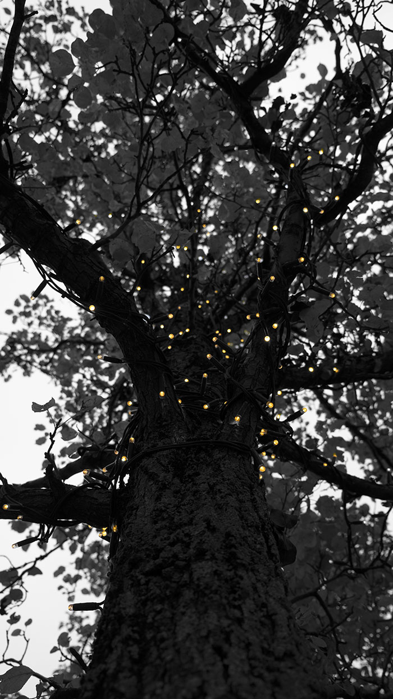

A series of images capturing Christmas in Manchester.
Image 1
Bobbi
Image 2
Bobbi
Image 3
Bobbi
This is where I went on location:
Image 1
Star Lights
I used a shallow depth of field to isolate one of the paper stars. This gains the focus of my audience, particularly after I used Photoshop to saturate it individually. I then juxtaposed this with the dreary background of Piccadilly Gardens, which I also saturated, in order to set the scene.
Date: November 2019
Theme: Christmas in Manchester
Image 2
Building Lights
I used the ‘fill the frame’ technique to overwhelm the viewer with the fairy lights in the image. Using a shallow depth of field, I made these sharp in the foreground whilst blurring the building in the background. I was careful not to use too low of an aperture to make it distinguishable in order to set the scene.
Date: November 2019
Theme: Christmas in Manchester
Image 3
Tree Lights

I used the tree trunk as a leading line to guide the viewer up the tree and towards my point of focus, in the fairy lights. I then edited the image using Photoshop to colour-pop this element of the image so as to make the lights stand out and reinforce my theme of Christmas in Manchester.